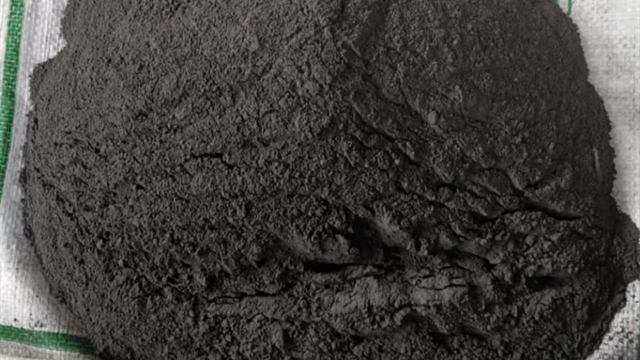
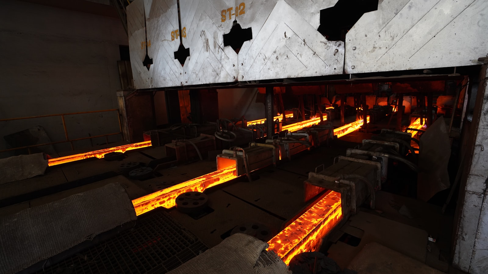
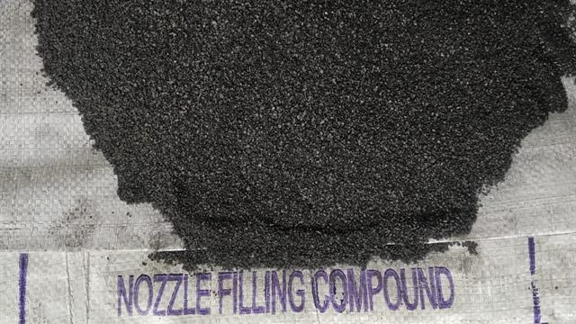
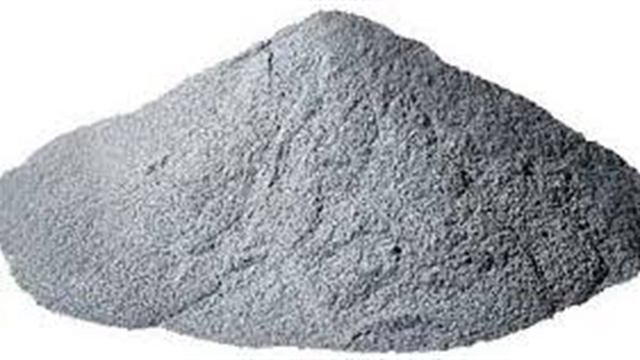

How to Select Casting Powder for Continuous Casting
What to share about casting speed, section size, steel grade, and surface defects before selecting a Mould Powder or Mold Flux grade.
Read Casting Powder GuideTechnical Blog
Short, useful guides for purchase teams, SMS teams, and maintenance teams choosing Casting Powder, Nozzle Filling Compound, Refractory Castables, Mortar, Radex, and Ladle Covering Compound.

Featured Guides

What to share about casting speed, section size, steel grade, and surface defects before selecting a Mould Powder or Mold Flux grade.
Read Casting Powder Guide
Key operating details that affect free opening performance, lancing reduction, and ladle nozzle flow consistency.
Read NFC Guide
How application zone, temperature, abrasion, installation method, and dry-out practice influence Castable selection.
Read Castable Guide
Practical points on heat retention, covering practice, holding time, and molten steel temperature stability.
Read Radex GuideBuyer Notes
In many steel plants these names refer to the same broad product family used during continuous casting. The material is added on top of molten steel in the mould area, where it melts and forms slag. This slag supports lubrication, insulation, oxidation protection, and controlled heat transfer between the shell and the mould wall.
The important point for buyers is not the name alone, but whether the grade is suitable for the plant's casting route. Billet, bloom, slab, round, and open casting operations can need different melting behavior, carbon level, viscosity, and consumption characteristics.
NFC performance depends on the actual ladle practice. A plant with long holding time, high temperature variation, or frequent lancing may need a different blend from a plant with shorter turnaround and stable opening behavior. Bore size, heat size, steel grade, and current free opening percentage are useful inputs.
When these details are shared, the supplier can recommend a realistic starting grade and the plant can evaluate whether the trial improves free opening reliability, reduces lancing, and fits normal operator handling.
High alumina content is only one part of Castable selection. Application area, abrasion, slag exposure, thermal shock, lining thickness, water addition, curing, and dry-out practice all influence field performance. A good recommendation starts with the location of the repair and the reason the previous lining failed.
For urgent shutdowns, installation speed and curing window also matter. Sharing the available shutdown time helps decide which Refractory Castable, Refractory Monolithic material, or Mortar is practical for the plant.
Radex or Ladle Covering Compound is used to reduce heat loss from molten steel during ladle holding and transfer. Performance depends on proper surface coverage, spreadability, dosage, hold time, and the plant's target temperature drop. Too little material may leave exposed areas, while poor spreadability can make coverage inconsistent.
Plants evaluating a cover material should record starting temperature, holding duration, temperature before casting, dosage, and operator feedback. That data helps tune the grade and consumption for repeat use.
Use the enquiry assistant to prepare the details our technical team needs. It takes less than a minute and creates a WhatsApp-ready message.
Open Enquiry Assistant